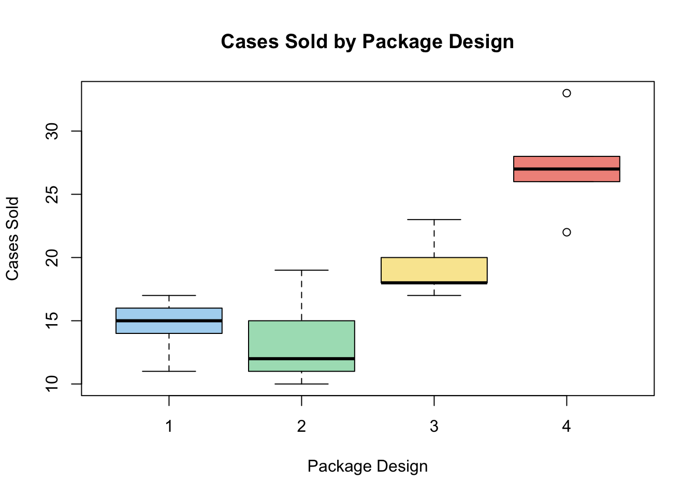
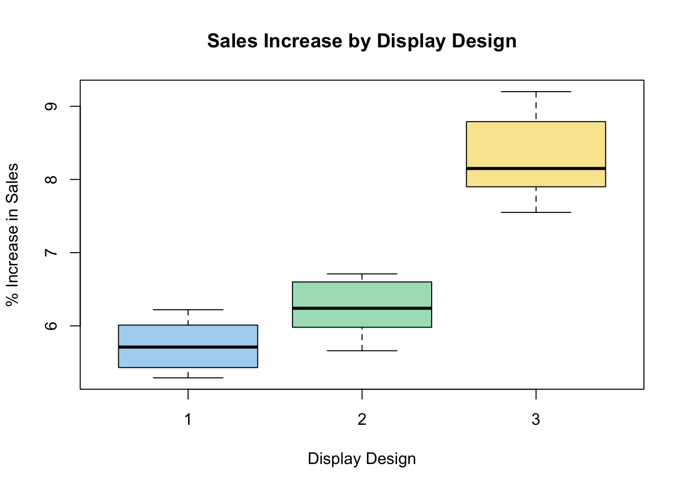
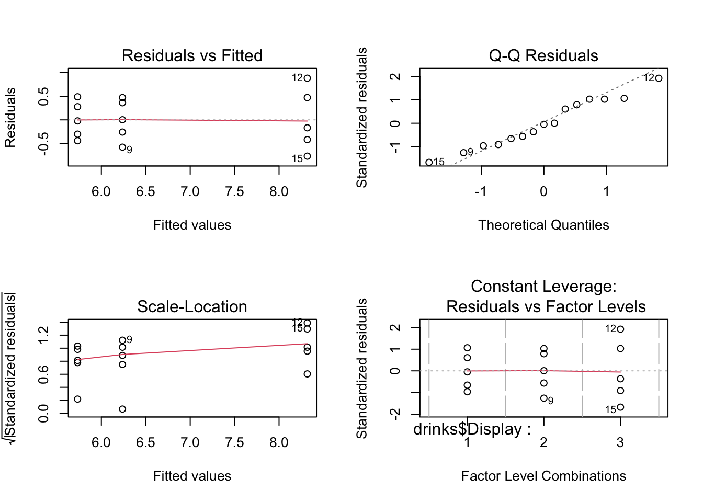
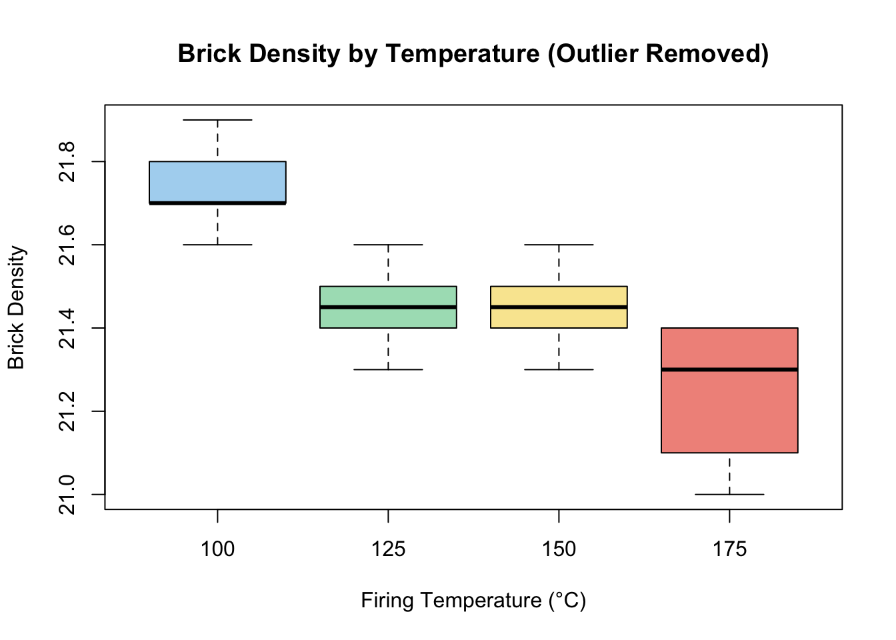

📝 How to use this guide: Each question is answered step by step, with plain-English explanations before the formal answer. Code is shown so you can reproduce every result in R. Leave the annotation boxes empty — those are for your own notes later!
Imagine you want to know whether three different fertilizers produce different crop yields. You could run lots of t-tests comparing them two at a time, but that inflates your chance of getting a false positive. ANOVA (Analysis of Variance) solves this — it compares all groups in a single test by asking: “Is the variation between groups larger than the variation within groups?”
If yes, something is going on. If no, any group differences are probably just random noise.
2.2 Experimental Design Vocabulary
Term
Plain English
Formal Definition
Factor
The thing you’re changing on purpose
A controlled explanatory variable whose levels are set by the experimenter
Level
The specific settings of that thing
Different values of the controlled variable
Treatment
Each unique experimental condition
Each combination of factor levels
💡 Memory trick: A factor is like a dial on a machine. The levels are the positions you can turn it to. A treatment is one specific dial position (or combination of positions if there are multiple dials).
2.3 The ANOVA Model
The ANOVA model looks like this:
\[y_{ij} = \mu + \tau_i + \varepsilon_{ij}\]
Symbol
Meaning
\(y_{ij}\)
The observation for subject \(j\) in group \(i\)
\(\mu\)
The overall mean (grand mean)
\(\tau_i\)
The effect of treatment \(i\) (how much group \(i\) differs from overall mean)
Where \(\hat{\beta}_0\) is the mean of the reference group (usually group 1), and the \(\hat{\beta}\) values are how much each other group differs from it.
2.4 The ANOVA Table — Decoded
Df Sum Sq Mean Sq F value Pr(>F)
Treatment k-1 SS_T MS_T F p
Residuals N-k SS_E MS_E
Df = degrees of freedom. For the treatment: number of groups minus 1. For residuals: total observations minus number of groups.
Sum Sq = total variability attributable to this source.
Mean Sq = Sum Sq / Df (average variability per degree of freedom).
F value = MS_Treatment / MS_Residuals. Big F = groups are more different than random noise.
Pr(>F) = p-value. If < 0.05, we reject H₀ (at least one group mean differs).
2.5 Effect Size η² (Eta-Squared)
The p-value tells you if an effect exists. η² tells you how big it is.
💡 η² is literally “the proportion of total variation explained by the treatment.”
2.6 Tukey’s HSD — The Pairwise Test
After ANOVA tells you something is different, Tukey’s Honestly Significant Difference (HSD) test tells you which pairs are different. It controls the family-wise error rate (the chance of any false positive across all comparisons).
Reading Tukey output: Look at p adj. If it’s < 0.05, those two groups are significantly different.
2.7 Model Diagnostics — The Four Plots
When you run plot(model) in R, you get four plots:
Residuals vs Fitted: Should show random scatter with no pattern. A pattern = violated assumptions.
Q-Q Plot: Residuals should fall on the diagonal line. Deviations = non-normality.
Scale-Location: Should be flat. A funnel shape = unequal variances (heteroscedasticity).
Residuals vs Leverage: Points with high leverage AND high residuals are influential — they may be pulling your results.
3 Questions and Worked Solutions
3.1 Q1 — Experimental Design Vocabulary
3.1.1 Question
In the context of experimental design, what is: (i) a factor? (ii) a level? (iii) a treatment?
3.1.2 Step-by-step explanation
Think of making coffee. You decide to test whether grind size and water temperature affect taste.
The things you’re controlling (grind size, water temperature) → factors
The specific settings you try (coarse/fine/medium, 85°C/90°C/95°C) → levels
Each specific combination you actually brew (fine + 90°C, coarse + 95°C, etc.) → treatment
3.1.3 Answer
(i) Factor: A factor is a controlled explanatory variable — a variable whose levels are deliberately set by the experimenter.
(ii) Level: A level represents a specific value (or category) of a factor.
(iii) Treatment: A treatment is one specific experimental condition. If there is only one factor, each level is a treatment. If there are multiple factors, each combination of factor levels is a treatment.
📝 Annotation space — add your own notes here:
3.2 Q2 — Drill Press Experiment
3.2.1 Question
A mechanical engineer studies thrust force developed by a drill press. He suspects drilling speed and feed rate affect thrust force. He selects 4 feed rates and 2 drilling speeds (high and low).
How many factors? (ii) How many levels each? (iii) How many treatments?
3.2.2 Step-by-step explanation
Count what is being deliberately varied:
Factor 1: Drilling speed (2 levels: high, low)
Factor 2: Feed rate (4 levels)
Treatments: Every possible combination = 2 × 4 = 8 treatments
3.2.3 Answer
(i) Two factors: drilling speed and feed rate.
(ii) Drilling speed has 2 levels (high, low). Feed rate has 4 levels.
(iii) 2 × 4 = 8 treatments total.
📝 Annotation space:
3.3 Q3 & Q4 — Randomized Block Design
3.3.1 Question
Give an example of a randomized block design. Why is it appropriate?
3.3.2 Plain English Explanation
A randomized block design is used when you know there’s a nuisance variable that could affect your results, but you’re not interested in it — you just want to control for it.
Example: A manufacturer wants to test 4 chemical formulations. Each formulation is made from a batch of raw material, but each batch is only large enough for 4 formulations. Different batches might have natural variation. So “batch” is a nuisance variable.
Design:
Formula
Batch 1
Batch 2
Batch 3
Batch 4
Batch 5
1
✓
✓
✓
✓
✓
2
✓
✓
✓
✓
✓
3
✓
✓
✓
✓
✓
4
✓
✓
✓
✓
✓
Each batch = one “block.” Within each block, formulas are randomly assigned. This controls for batch-to-batch variation.
3.3.3 Answer
Q3: A manufacturer testing 4 formulations across 5 batches of raw material, where each batch introduces natural variation, uses a randomized block design (see table above).
Q4: The randomized block design is appropriate because it controls for the effect of batch variation, which would otherwise mask or confound the treatment effects.
📝 Annotation space:
3.4 Q5 — Multiple Testing and Type I Error
3.4.1 Question
If we test five null hypotheses (all true) at significance level α = 0.01, what is the probability of making at least one Type I error?
3.4.2 Plain English Explanation
A Type I error is a false positive — rejecting H₀ when it’s actually true. At α = 0.01, each individual test has a 1% chance of a false positive.
The trick is to use the complement: instead of calculating P(at least one error), calculate P(no errors at all) and subtract from 1.
\[P(\text{at least one error}) = 1 - P(\text{no errors})\]
\[P(\text{no error on one test}) = 1 - 0.01 = 0.99\]
\[P(\text{no errors on 5 tests}) = 0.99^5 = 0.9510\]
\[P(\text{at least one error}) = 1 - 0.9510 = \mathbf{0.049}\]
3.4.3 Answer
\[P(\text{at least one Type I error}) = 1 - (1-0.01)^5 = 1 - 0.99^5 \approx \mathbf{0.049}\]
Even though each test had only a 1% false positive rate, running 5 tests brings the combined risk up to nearly 5%! This is why we need methods like Tukey’s HSD when making multiple comparisons.
📝 Annotation space:
3.5 Q6 — ANOVA Assumptions
3.5.1 Question
Name two assumptions that should be satisfied before carrying out an ANOVA.
3.5.2 Answer
Independence (Random Sampling): Observations must be independent of each other. No observation should influence another.
Homogeneity of Variance (Equal Variances): The variance within each group should be approximately equal across all groups. Tested using the Fligner-Killeen or Levene test.
Bonus (not always tested but important to know): Normality — the residuals (errors) should be approximately normally distributed. This is checked via the Q-Q plot in model diagnostics.
📝 Annotation space:
3.6 Q7 — Kenton Foods: Full ANOVA Worked Example
3.6.1 Question
Kenton Food Company tests 4 package designs for cereal across 20 stores (5 stores per design). Analyse the R output provided.
3.6.2 Setup and Data
Code
library(tidyverse)# Load the datakenton <-read_tsv("Kenton_Foods.txt")kenton$Package <-as.factor(kenton$Package)# Quick lookglimpse(kenton)
# Boxplotboxplot(kenton$Cases ~ kenton$Package,xlab ="Package Design",ylab ="Cases Sold",main ="Cases Sold by Package Design",col =c("#AED6F1", "#A9DFBF", "#F9E79F", "#F1948A"))

How to read the boxplot: Each box shows the middle 50% of sales for that package. The line in the middle is the median. Points outside the “whiskers” are potential outliers. Here, Package 4 clearly has higher sales.
3.6.4 Step 2: Q7(i) — Fligner-Killeen Test
3.6.4.1 Plain English
Before running ANOVA, we must check that the variance in sales is similar across all package designs. The Fligner-Killeen test does this.
H₀: all groups have equal variance
Hₐ: at least one group has different variance
If p > 0.05, we’re fine to proceed.
Code
fligner.test(kenton$Cases ~ kenton$Package)
Fligner-Killeen test of homogeneity of variances
data: kenton$Cases by kenton$Package
Fligner-Killeen:med chi-squared = 1.1321, df = 3, p-value = 0.7693
Result from output: Fligner-Killeen: med chi-squared = 1.1321, df = 3, p-value = 0.7693
Interpretation: p = 0.7693 >> 0.05. We fail to reject H₀. There is no significant difference in variance across package designs. ✅ The equal variance assumption is satisfied — we can proceed with ANOVA.
3.6.5 Step 3: Q7(ii) — Hypotheses
\[H_0: \mu_1 = \mu_2 = \mu_3 = \mu_4\]
“The mean number of cases sold is the same for all four package designs.”
\[H_A: \text{At least one } \mu_i \text{ is different}\]
“At least one package design leads to a different mean number of cases sold.”
3.6.6 Step 4: Q7(iii) — Degrees of Freedom
Why does Package have 3 degrees of freedom?
The formula is: df = (number of groups) − 1 = 4 − 1 = 3
Think of it this way: once you know 3 group means and the overall mean, the 4th group mean is already determined. You “use up” one df by estimating the overall mean.
How to interpret the Tukey plot: A confidence interval that does not cross zero = significant difference. If the CI includes zero, the two groups could plausibly have the same mean.
Summary grouping table (for exam reports):
Package
Mean Cases
Grouping
1
14.6
A
2
13.4
A
3
19.2
B
4
27.2
C
Groups sharing a letter are NOT significantly different from each other.
Full written report (exam-style):
A one-way analysis of variance indicated that package design has a significant effect on the number of cases of cereal sold, F(3, 16) = 19.56, MSE = 10.0, p < 0.001, η² = 0.786. Tukey’s HSD test indicated that the mean number of cases sold was significantly different between all designs except designs 1 vs 2 (p = 0.931) and designs 1 vs 3 (p = 0.140). Package 4 had the highest mean sales (M = 27.2).
3.6.9 Step 7: Q7(v) — The ANOVA Model
Code
summary.lm(model_kenton)
Call:
aov(formula = kenton$Cases ~ kenton$Package)
Residuals:
Min 1Q Median 3Q Max
-5.20 -1.60 -0.40 1.45 5.80
Coefficients:
Estimate Std. Error t value Pr(>|t|)
(Intercept) 14.600 1.414 10.32 1.76e-08 ***
kenton$Package2 -1.200 2.000 -0.60 0.5569
kenton$Package3 4.600 2.000 2.30 0.0352 *
kenton$Package4 12.600 2.000 6.30 1.06e-05 ***
---
Signif. codes: 0 '***' 0.001 '**' 0.01 '*' 0.05 '.' 0.1 ' ' 1
Residual standard error: 3.162 on 16 degrees of freedom
Multiple R-squared: 0.7858, Adjusted R-squared: 0.7456
F-statistic: 19.56 on 3 and 16 DF, p-value: 1.333e-05
Mean cases sold for Package 1 (the reference group)
\(\hat{\beta}_1 = -1.2\)
Package 2 effect
Package 2 sells 1.2 fewer cases on average than Package 1
\(\hat{\beta}_2 = 4.6\)
Package 3 effect
Package 3 sells 4.6 more cases on average than Package 1
\(\hat{\beta}_3 = 12.6\)
Package 4 effect
Package 4 sells 12.6 more cases on average than Package 1
The dummy variable coding:
Group
\(x_1\)
\(x_2\)
\(x_3\)
Package 1
0
0
0
Package 2
1
0
0
Package 3
0
1
0
Package 4
0
0
1
📝 Annotation space:
3.7 Q8 — Vitamin C in Multivitamins
3.7.1 Question
Twelve measurements of Vitamin C content (mg) were taken for each of three multivitamin brands (A, B, C). Interpret the R output.
3.7.2 Plain English Setup
We’re asking: “Do these three vitamin brands actually deliver different amounts of Vitamin C, or is any difference just random variation?”
3.7.3 Q8(i) — Hypotheses
\[H_0: \mu_A = \mu_B = \mu_C\]
“The mean Vitamin C content is the same across all three brands.”
\[H_A: \text{At least one brand has a different mean Vitamin C content}\]
3.7.4 Q8(ii) — Levene Test Hypotheses
\[H_0: \sigma^2_A = \sigma^2_B = \sigma^2_C\]
“The variance in Vitamin C content is equal across all three brands.”
\[H_A: \text{At least one brand has different variance}\]
3.7.5 Q8(iii) — Interpreting the Levene Test
From the output:
Levene's Test: Df F value Pr(>F)
group 2 0.6815 0.5128
33
Interpretation: p = 0.5128 >> 0.05. We fail to reject H₀. There is not enough evidence to suggest that variances differ across brands. ✅ The homogeneity of variance assumption is met — we can proceed with ANOVA.
3.7.6 Q8(iv) — Completing the ANOVA Table
The original output had missing values:
Df Sum Sq Mean Sq F value Pr(>F)
variety - 29.8 - - 0.355
Residuals - 459.4 -
Filling in the blanks:
variety Df: 3 groups − 1 = 2
Residuals Df: 36 total − 3 groups = 33
variety Mean Sq: 29.8 / 2 = 14.9
Residuals Mean Sq: 459.4 / 33 = 13.92
F value: 14.9 / 13.92 = 1.069 ✓ (matches the given value)
A small effect (6% of variation explained by brand).
Written report:
A one-way analysis of variance did not provide evidence to suggest that the mean Vitamin C content varied between multivitamin varieties, F(2, 33) = 1.069, MSE = 13.92, p = 0.355, η² = 0.061. Tukey’s HSD test confirmed that no pairwise comparisons were significantly different at the 5% level.
# Boxplotboxplot(drinks$Increase ~ drinks$Display,xlab ="Display Design",ylab ="% Increase in Sales",main ="Sales Increase by Display Design",col =c("#AED6F1", "#A9DFBF", "#F9E79F"))

Summary statistics table:
Design
Mean % Increase
SD
Max
Min
n
1
5.73
0.388
6.22
5.29
5
2
6.24
0.434
6.71
5.66
5
3
8.32
0.670
9.20
7.55
5
How to interpret the boxplot: Display 3 clearly has higher median sales. Displays 1 and 2 look similar. No obvious outliers. This already suggests Display 3 might be the winner.
Check for equal variances:
Code
fligner.test(drinks$Increase ~ drinks$Display)
Fligner-Killeen test of homogeneity of variances
data: drinks$Increase by drinks$Display
Fligner-Killeen:med chi-squared = 2.0427, df = 2, p-value = 0.3601
Fligner-Killeen: p = 0.3601. Since p > 0.05, variances are equal across groups. ✅
Df Sum Sq Mean Sq F value Pr(>F)
drinks$Display 2 18.78 9.392 35.77 8.78e-06 ***
Residuals 12 3.15 0.263
---
Signif. codes: 0 '***' 0.001 '**' 0.01 '*' 0.05 '.' 0.1 ' ' 1
ANOVA Table:
Source
Df
Sum Sq
Mean Sq
F value
p-value
Display
2
18.78
9.392
35.77
< 0.001
Residuals
12
3.15
0.263
Interpreting this table: F(2, 12) = 35.77. The F-statistic is very large — the between-group variation is 35× the within-group noise. p < 0.001 → very strong evidence that at least one display performs differently.
Designs 1 and 2 are not significantly different from each other (same letter A), but both are significantly different from Design 3.
3.8.6 Q9(v) — ANOVA Model
Code
summary.lm(model_drinks)
Call:
aov(formula = drinks$Increase ~ drinks$Display)
Residuals:
Min 1Q Median 3Q Max
-0.768 -0.360 -0.022 0.417 0.882
Coefficients:
Estimate Std. Error t value Pr(>|t|)
(Intercept) 5.7320 0.2291 25.015 1.01e-11 ***
drinks$Display2 0.5060 0.3241 1.561 0.144
drinks$Display3 2.5860 0.3241 7.980 3.86e-06 ***
---
Signif. codes: 0 '***' 0.001 '**' 0.01 '*' 0.05 '.' 0.1 ' ' 1
Residual standard error: 0.5124 on 12 degrees of freedom
Multiple R-squared: 0.8564, Adjusted R-squared: 0.8324
F-statistic: 35.77 on 2 and 12 DF, p-value: 8.782e-06
\[\hat{y}_{ij} = 5.732 + 0.506x_1 + 2.586x_2\]
Term
Meaning
5.732
Mean % increase for Display 1 (reference)
0.506
Display 2 sells 0.506% more than Display 1 (not significant)
2.586
Display 3 sells 2.586% more than Display 1 (significant)
Dummy variable coding:
Group
\(x_1\)
\(x_2\)
Display 1
0
0
Display 2
1
0
Display 3
0
1
3.8.7 Q9(vi) — Model Diagnostics
Code
par(mfrow =c(2, 2))plot(model_drinks)

How to read each diagnostic plot:
1. Residuals vs Fitted: The points should be scattered randomly around the horizontal line at zero, with no obvious pattern. A U-shape or funnel would indicate a problem. Here the scatter looks random → ✅
2. Normal Q-Q Plot: The points should follow the diagonal dashed line closely. If they curve away (especially at the ends), the normality assumption is violated. Here the points sit close to the line → ✅
3. Scale-Location Plot: The red line should be roughly flat. An upward slope means higher fitted values have more variance (heteroscedasticity). Here it looks approximately flat → ✅
4. Residuals vs Leverage: High-leverage points that also have large residuals are influential — they could be distorting results. Look for points outside the Cook’s distance dashed lines. Here no points are outside → ✅
Written report for Q9:
A one-way analysis of variance indicated that the end-aisle display design has a significant effect on the percentage increase in sales, F(2, 12) = 35.77, MSE = 0.263, p < 0.001, η² = 0.856. Tukey’s HSD test indicated that Display 3 produced significantly higher sales increases than both Display 1 (p < 0.001) and Display 2 (p = 0.001), while Displays 1 and 2 were not significantly different from each other (p = 0.358). Model diagnostic plots confirmed that all ANOVA assumptions were satisfied.
📝 Annotation space:
3.9 Q10 — Brick Firing Temperature
3.9.1 Question
Four firing temperatures (100°C, 125°C, 150°C, 175°C) were tested to see if they affect brick density. Run a full analysis including handling an influential outlier.
Grubbs test for one outlier
data: bricks$Density
G = 2.60652, U = 0.82133, p-value = 0.1317
alternative hypothesis: highest value 22.1 is an outlier
Code
# Check within the 175°C group specificallygrubbs.test(bricks$Density[bricks$Temperature =="175"])
Grubbs test for one outlier
data: bricks$Density[bricks$Temperature == "175"]
G = 2.50014, U = 0.22831, p-value = 0.004112
alternative hypothesis: highest value 22.1 is an outlier
Grubbs test interpretation: - Overall dataset: outlier is not significant (p > 0.05) — no individual value is unusual enough to be an outlier when looking at all temperatures together. - Within the 175°C group only: the outlier is significant (p < 0.05) — observation 37 (density = 22.1) stands out as unusual within that temperature group.
⚠️ Important: The observation 22.1 at 175°C looks suspicious. It may be a data entry error or a genuine anomaly. Since we don’t have additional information, we need to run the analysis both with and without this point.
Checking equal variances:
Code
fligner.test(bricks$Density ~ bricks$Temperature)
Fligner-Killeen test of homogeneity of variances
data: bricks$Density by bricks$Temperature
Fligner-Killeen:med chi-squared = 4.9654, df = 3, p-value = 0.1743
What to look for here: Observation 37 (the 22.1 density at 175°C) will likely show up as a point of high influence. Check the “Residuals vs Leverage” plot — if it falls outside the Cook’s distance lines, it is highly influential and the analysis should be rerun without it.
The diagnostic plots reveal that observation 37 is highly influential. We should remove it and rerun.
3.9.7 Reanalysis — Outlier Removed
Code
bricks_rm <- bricks[-37, ]# Check boxplots againboxplot(bricks_rm$Density ~ bricks_rm$Temperature,xlab ="Firing Temperature (°C)",ylab ="Brick Density",main ="Brick Density by Temperature (Outlier Removed)",col =c("#AED6F1", "#A9DFBF", "#F9E79F", "#F1948A"))

Code
# Test variance equality againfligner.test(bricks_rm$Density ~ bricks_rm$Temperature)
Fligner-Killeen test of homogeneity of variances
data: bricks_rm$Density by bricks_rm$Temperature
Fligner-Killeen:med chi-squared = 3.1345, df = 3, p-value = 0.3713
Since we have no additional information about the outlier (observation 37, density = 22.1 at 175°C), and it is a plausible value for brick density, we report both analyses:
With outlier: A one-way ANOVA [report F, df, MSE, p, η²]. Tukey’s HSD indicated [report which groups differ].
Without outlier: Removing observation 37 changes the pairwise comparisons [describe how results change]. Both sets of results are presented as the outlier cannot be definitively excluded.
💡 Exam tip: When an outlier is influential, always (a) report it, (b) investigate it, (c) run the analysis both ways, and (d) explain what changes.
📝 Annotation space:
4 Summary Points — Key Takeaways
Factor = what you control. Level = the settings. Treatment = one specific combination.
Randomized block design controls for a known nuisance variable by including it as a “block.”
Multiple testing inflates Type I error: P(at least one error) = 1 − (1 − α)^k.
ANOVA assumptions: independence, equal variances (tested with Fligner or Levene), approximately normal residuals.
ANOVA hypotheses: H₀: all group means equal. Hₐ: at least one differs.
F statistic = MS_Treatment / MS_Residuals. Big F → more evidence against H₀.
Degrees of freedom: Treatment = k − 1. Residuals = N − k.
η² = SS_Treatment / SS_Total. Proportion of variation explained. Exam standard: report alongside F, df, MSE, p.
Tukey HSD: controls family-wise error when doing all pairwise comparisons. Groups sharing a superscript letter are not significantly different.
The ANOVA model: ŷ = β₀ + β₁x₁ + β₂x₂ + ··· where β₀ = mean of reference group and β coefficients = differences from reference group.
Influential outliers: Always run the analysis with AND without them if they appear influential. Report both and explain.
5 Quick Formula Reference
Code
# η² (Effect Size)eta_sq <- SS_Treatment / (SS_Treatment + SS_Residuals)# Degrees of freedomdf_treatment <- k -1# k = number of groupsdf_residuals <- N - k # N = total observations# Mean SquaresMS_Treatment <- SS_Treatment / df_treatmentMS_Residuals <- SS_Residuals / df_residuals# F statisticF_stat <- MS_Treatment / MS_Residuals# Type I error (multiple tests)P_at_least_one_error <-1- (1- alpha)^num_tests
✏️ General annotations — add your own notes, mnemonics, or diagrams below:
:::{#quarto-navigation-envelope .hidden}
[Semester Notes]{.hidden .quarto-markdown-envelope-contents render-id="cXVhcnRvLWludC1zaWRlYmFyLXRpdGxl"}
[Semester Notes]{.hidden .quarto-markdown-envelope-contents render-id="cXVhcnRvLWludC1uYXZiYXItdGl0bGU="}
[Module Overview]{.hidden .quarto-markdown-envelope-contents render-id="cXVhcnRvLWludC1uZXh0"}
[STAT9004 – Week 2 Study Guide]{.hidden .quarto-markdown-envelope-contents render-id="cXVhcnRvLWludC1wcmV2"}
[Home]{.hidden .quarto-markdown-envelope-contents render-id="cXVhcnRvLWludC1zaWRlYmFyOi9pbmRleC5odG1sSG9tZQ=="}
[Data Mining]{.hidden .quarto-markdown-envelope-contents render-id="cXVhcnRvLWludC1zaWRlYmFyOnF1YXJ0by1zaWRlYmFyLXNlY3Rpb24tMQ=="}
[Module Overview]{.hidden .quarto-markdown-envelope-contents render-id="cXVhcnRvLWludC1zaWRlYmFyOi9kYXRhLW1pbmluZy9pbmRleC5odG1sTW9kdWxlLU92ZXJ2aWV3"}
[Weekly Notes]{.hidden .quarto-markdown-envelope-contents render-id="cXVhcnRvLWludC1zaWRlYmFyOnF1YXJ0by1zaWRlYmFyLXNlY3Rpb24tMg=="}
[Week 1]{.hidden .quarto-markdown-envelope-contents render-id="cXVhcnRvLWludC1zaWRlYmFyOi9kYXRhLW1pbmluZy93ZWVrLTEuaHRtbFdlZWstMQ=="}
[Week 2]{.hidden .quarto-markdown-envelope-contents render-id="cXVhcnRvLWludC1zaWRlYmFyOi9kYXRhLW1pbmluZy93ZWVrLTIuaHRtbFdlZWstMg=="}
[Week 3]{.hidden .quarto-markdown-envelope-contents render-id="cXVhcnRvLWludC1zaWRlYmFyOi9kYXRhLW1pbmluZy93ZWVrLTMuaHRtbFdlZWstMw=="}
[Week 4]{.hidden .quarto-markdown-envelope-contents render-id="cXVhcnRvLWludC1zaWRlYmFyOi9kYXRhLW1pbmluZy93ZWVrLTQuaHRtbFdlZWstNA=="}
[Week 5]{.hidden .quarto-markdown-envelope-contents render-id="cXVhcnRvLWludC1zaWRlYmFyOi9kYXRhLW1pbmluZy93ZWVrLTUuaHRtbFdlZWstNQ=="}
[Week 6]{.hidden .quarto-markdown-envelope-contents render-id="cXVhcnRvLWludC1zaWRlYmFyOi9kYXRhLW1pbmluZy93ZWVrLTYuaHRtbFdlZWstNg=="}
[Week 7]{.hidden .quarto-markdown-envelope-contents render-id="cXVhcnRvLWludC1zaWRlYmFyOi9kYXRhLW1pbmluZy93ZWVrLTcuaHRtbFdlZWstNw=="}
[Week 8]{.hidden .quarto-markdown-envelope-contents render-id="cXVhcnRvLWludC1zaWRlYmFyOi9kYXRhLW1pbmluZy93ZWVrLTguaHRtbFdlZWstOA=="}
[Labs]{.hidden .quarto-markdown-envelope-contents render-id="cXVhcnRvLWludC1zaWRlYmFyOnF1YXJ0by1zaWRlYmFyLXNlY3Rpb24tMw=="}
[Labs]{.hidden .quarto-markdown-envelope-contents render-id="cXVhcnRvLWludC1zaWRlYmFyOnF1YXJ0by1zaWRlYmFyLXNlY3Rpb24tNA=="}
[Lab 3: Decision Trees in R]{.hidden .quarto-markdown-envelope-contents render-id="cXVhcnRvLWludC1zaWRlYmFyOi9kYXRhLW1pbmluZy9sYWJzL2xhYi0zLmh0bWxMYWItMzotRGVjaXNpb24tVHJlZXMtaW4tUg=="}
[Lab 4a: Logistic Regression in R]{.hidden .quarto-markdown-envelope-contents render-id="cXVhcnRvLWludC1zaWRlYmFyOi9kYXRhLW1pbmluZy9sYWJzL2xhYi00YS5odG1sTGFiLTRhOi1Mb2dpc3RpYy1SZWdyZXNzaW9uLWluLVI="}
[Regression Analysis]{.hidden .quarto-markdown-envelope-contents render-id="cXVhcnRvLWludC1zaWRlYmFyOnF1YXJ0by1zaWRlYmFyLXNlY3Rpb24tNQ=="}
[Module Overview]{.hidden .quarto-markdown-envelope-contents render-id="cXVhcnRvLWludC1zaWRlYmFyOi9yZWdyZXNzaW9uLWFuYWx5c2lzL2luZGV4Lmh0bWxNb2R1bGUtT3ZlcnZpZXc="}
[Weekly Notes]{.hidden .quarto-markdown-envelope-contents render-id="cXVhcnRvLWludC1zaWRlYmFyOnF1YXJ0by1zaWRlYmFyLXNlY3Rpb24tNg=="}
[Week 1]{.hidden .quarto-markdown-envelope-contents render-id="cXVhcnRvLWludC1zaWRlYmFyOi9yZWdyZXNzaW9uLWFuYWx5c2lzL3dlZWstMS5odG1sV2Vlay0x"}
[Week 2]{.hidden .quarto-markdown-envelope-contents render-id="cXVhcnRvLWludC1zaWRlYmFyOi9yZWdyZXNzaW9uLWFuYWx5c2lzL3dlZWstMi5odG1sV2Vlay0y"}
[Week 3]{.hidden .quarto-markdown-envelope-contents render-id="cXVhcnRvLWludC1zaWRlYmFyOi9yZWdyZXNzaW9uLWFuYWx5c2lzL3dlZWstMy5odG1sV2Vlay0z"}
[Week 4]{.hidden .quarto-markdown-envelope-contents render-id="cXVhcnRvLWludC1zaWRlYmFyOi9yZWdyZXNzaW9uLWFuYWx5c2lzL3dlZWstNC5odG1sV2Vlay00"}
[Week 5]{.hidden .quarto-markdown-envelope-contents render-id="cXVhcnRvLWludC1zaWRlYmFyOi9yZWdyZXNzaW9uLWFuYWx5c2lzL3dlZWstNS5odG1sV2Vlay01"}
[Week 6]{.hidden .quarto-markdown-envelope-contents render-id="cXVhcnRvLWludC1zaWRlYmFyOi9yZWdyZXNzaW9uLWFuYWx5c2lzL3dlZWstNi5odG1sV2Vlay02"}
[Week 7]{.hidden .quarto-markdown-envelope-contents render-id="cXVhcnRvLWludC1zaWRlYmFyOi9yZWdyZXNzaW9uLWFuYWx5c2lzL3dlZWstNy5odG1sV2Vlay03"}
[Week 8]{.hidden .quarto-markdown-envelope-contents render-id="cXVhcnRvLWludC1zaWRlYmFyOi9yZWdyZXNzaW9uLWFuYWx5c2lzL3dlZWstOC5odG1sV2Vlay04"}
[Week 9]{.hidden .quarto-markdown-envelope-contents render-id="cXVhcnRvLWludC1zaWRlYmFyOi9yZWdyZXNzaW9uLWFuYWx5c2lzL3dlZWstOS5odG1sV2Vlay05"}
[Week 10]{.hidden .quarto-markdown-envelope-contents render-id="cXVhcnRvLWludC1zaWRlYmFyOi9yZWdyZXNzaW9uLWFuYWx5c2lzL3dlZWstMTAuaHRtbFdlZWstMTA="}
[Labs]{.hidden .quarto-markdown-envelope-contents render-id="cXVhcnRvLWludC1zaWRlYmFyOnF1YXJ0by1zaWRlYmFyLXNlY3Rpb24tNw=="}
[Labs]{.hidden .quarto-markdown-envelope-contents render-id="cXVhcnRvLWludC1zaWRlYmFyOnF1YXJ0by1zaWRlYmFyLXNlY3Rpb24tOA=="}
[Week 1 – Data Analysis Protocol]{.hidden .quarto-markdown-envelope-contents render-id="cXVhcnRvLWludC1zaWRlYmFyOi9yZWdyZXNzaW9uLWFuYWx5c2lzL2xhYnMvbGFiLTEuaHRtbFdlZWstMS3igJMtRGF0YS1BbmFseXNpcy1Qcm90b2NvbA=="}
[STAT9004 – Week 2 Study Guide]{.hidden .quarto-markdown-envelope-contents render-id="cXVhcnRvLWludC1zaWRlYmFyOi9yZWdyZXNzaW9uLWFuYWx5c2lzL2xhYnMvbGFiLTIuaHRtbFNUQVQ5MDA0LeKAky1XZWVrLTItU3R1ZHktR3VpZGU="}
[Exercise Sheet 3 — One-Way ANOVA]{.hidden .quarto-markdown-envelope-contents render-id="cXVhcnRvLWludC1zaWRlYmFyOi9yZWdyZXNzaW9uLWFuYWx5c2lzL2xhYnMvbGFiLTMuaHRtbEV4ZXJjaXNlLVNoZWV0LTMt4oCULU9uZS1XYXktQU5PVkE="}
[Time Series]{.hidden .quarto-markdown-envelope-contents render-id="cXVhcnRvLWludC1zaWRlYmFyOnF1YXJ0by1zaWRlYmFyLXNlY3Rpb24tOQ=="}
[Module Overview]{.hidden .quarto-markdown-envelope-contents render-id="cXVhcnRvLWludC1zaWRlYmFyOi90aW1lLXNlcmllcy9pbmRleC5odG1sTW9kdWxlLU92ZXJ2aWV3"}
[Weekly Notes]{.hidden .quarto-markdown-envelope-contents render-id="cXVhcnRvLWludC1zaWRlYmFyOnF1YXJ0by1zaWRlYmFyLXNlY3Rpb24tMTA="}
[Week 1]{.hidden .quarto-markdown-envelope-contents render-id="cXVhcnRvLWludC1zaWRlYmFyOi90aW1lLXNlcmllcy93ZWVrLTEuaHRtbFdlZWstMQ=="}
[Week 2]{.hidden .quarto-markdown-envelope-contents render-id="cXVhcnRvLWludC1zaWRlYmFyOi90aW1lLXNlcmllcy93ZWVrLTIuaHRtbFdlZWstMg=="}
[Week 3]{.hidden .quarto-markdown-envelope-contents render-id="cXVhcnRvLWludC1zaWRlYmFyOi90aW1lLXNlcmllcy93ZWVrLTMuaHRtbFdlZWstMw=="}
[Week 4]{.hidden .quarto-markdown-envelope-contents render-id="cXVhcnRvLWludC1zaWRlYmFyOi90aW1lLXNlcmllcy93ZWVrLTQuaHRtbFdlZWstNA=="}
[Week 5]{.hidden .quarto-markdown-envelope-contents render-id="cXVhcnRvLWludC1zaWRlYmFyOi90aW1lLXNlcmllcy93ZWVrLTUuaHRtbFdlZWstNQ=="}
[Week 6]{.hidden .quarto-markdown-envelope-contents render-id="cXVhcnRvLWludC1zaWRlYmFyOi90aW1lLXNlcmllcy93ZWVrLTYuaHRtbFdlZWstNg=="}
[Week 7]{.hidden .quarto-markdown-envelope-contents render-id="cXVhcnRvLWludC1zaWRlYmFyOi90aW1lLXNlcmllcy93ZWVrLTcuaHRtbFdlZWstNw=="}
[Week 8 - empty]{.hidden .quarto-markdown-envelope-contents render-id="cXVhcnRvLWludC1zaWRlYmFyOi90aW1lLXNlcmllcy93ZWVrLTguaHRtbFdlZWstOC0tLWVtcHR5"}
[Labs]{.hidden .quarto-markdown-envelope-contents render-id="cXVhcnRvLWludC1zaWRlYmFyOnF1YXJ0by1zaWRlYmFyLXNlY3Rpb24tMTE="}
[Labs]{.hidden .quarto-markdown-envelope-contents render-id="cXVhcnRvLWludC1zaWRlYmFyOnF1YXJ0by1zaWRlYmFyLXNlY3Rpb24tMTI="}
[STAT9005 – Time Series Analysis]{.hidden .quarto-markdown-envelope-contents render-id="cXVhcnRvLWludC1zaWRlYmFyOi90aW1lLXNlcmllcy9sYWJzL2xhYi0xLmh0bWxTVEFUOTAwNS3igJMtVGltZS1TZXJpZXMtQW5hbHlzaXM="}
[Lab 2 – Seasonality, Decomposition & Moving Averages]{.hidden .quarto-markdown-envelope-contents render-id="cXVhcnRvLWludC1zaWRlYmFyOi90aW1lLXNlcmllcy9sYWJzL2xhYi0yLmh0bWxMYWItMi3igJMtU2Vhc29uYWxpdHksLURlY29tcG9zaXRpb24tJi1Nb3ZpbmctQXZlcmFnZXM="}
[Time Series: Classical Models Lab]{.hidden .quarto-markdown-envelope-contents render-id="cXVhcnRvLWludC1zaWRlYmFyOi90aW1lLXNlcmllcy9sYWJzL2xhYi0zLmh0bWxUaW1lLVNlcmllczotQ2xhc3NpY2FsLU1vZGVscy1MYWI="}
[Exam Prep]{.hidden .quarto-markdown-envelope-contents render-id="cXVhcnRvLWludC1zaWRlYmFyOnF1YXJ0by1zaWRlYmFyLXNlY3Rpb24tMTM="}
[Exam]{.hidden .quarto-markdown-envelope-contents render-id="cXVhcnRvLWludC1zaWRlYmFyOnF1YXJ0by1zaWRlYmFyLXNlY3Rpb24tMTQ="}
[Practical R Test]{.hidden .quarto-markdown-envelope-contents render-id="cXVhcnRvLWludC1zaWRlYmFyOi90aW1lLXNlcmllcy9leGFtL1ByYWN0aWNhbF9SLmh0bWxQcmFjdGljYWwtUi1UZXN0"}
[STAT9005 — Time Series & PCA: Practical Exam Solutions]{.hidden .quarto-markdown-envelope-contents render-id="cXVhcnRvLWludC1zaWRlYmFyOi90aW1lLXNlcmllcy9leGFtL1ByYWN0aWNhbC1FeGFtLVNvbHV0aW9ucy5odG1sU1RBVDkwMDUt4oCULVRpbWUtU2VyaWVzLSYtUENBOi1QcmFjdGljYWwtRXhhbS1Tb2x1dGlvbnM="}
[Quiz Preparation]{.hidden .quarto-markdown-envelope-contents render-id="cXVhcnRvLWludC1zaWRlYmFyOi90aW1lLXNlcmllcy9leGFtL3F1aXouaHRtbFF1aXotUHJlcGFyYXRpb24="}
[Regression Analysis]{.hidden .quarto-markdown-envelope-contents render-id="cXVhcnRvLWJyZWFkY3J1bWJzLVJlZ3Jlc3Npb24tQW5hbHlzaXM="}
[Labs]{.hidden .quarto-markdown-envelope-contents render-id="cXVhcnRvLWJyZWFkY3J1bWJzLUxhYnM="}
[Exercise Sheet 3 — One-Way ANOVA]{.hidden .quarto-markdown-envelope-contents render-id="cXVhcnRvLWJyZWFkY3J1bWJzLUV4ZXJjaXNlLVNoZWV0LTMt4oCULU9uZS1XYXktQU5PVkE="}
:::
:::{#quarto-meta-markdown .hidden}
[Exercise Sheet 3 — One-Way ANOVA – Semester Notes]{.hidden .quarto-markdown-envelope-contents render-id="cXVhcnRvLW1ldGF0aXRsZQ=="}
[Exercise Sheet 3 — One-Way ANOVA – Semester Notes]{.hidden .quarto-markdown-envelope-contents render-id="cXVhcnRvLXR3aXR0ZXJjYXJkdGl0bGU="}
[Exercise Sheet 3 — One-Way ANOVA – Semester Notes]{.hidden .quarto-markdown-envelope-contents render-id="cXVhcnRvLW9nY2FyZHRpdGxl"}
[Semester Notes]{.hidden .quarto-markdown-envelope-contents render-id="cXVhcnRvLW1ldGFzaXRlbmFtZQ=="}
[Study Guide: Worked Solutions with Explanations]{.hidden .quarto-markdown-envelope-contents render-id="cXVhcnRvLXR3aXR0ZXJjYXJkZGVzYw=="}
[Study Guide: Worked Solutions with Explanations]{.hidden .quarto-markdown-envelope-contents render-id="cXVhcnRvLW9nY2FyZGRkZXNj"}
:::
<!-- -->
::: {.quarto-embedded-source-code}
```````````````````{.markdown shortcodes="false"}
---
title: "Exercise Sheet 3 — One-Way ANOVA"
subtitle: "Study Guide: Worked Solutions with Explanations"
format:
html:
toc: true
toc-depth: 3
toc-title: "Contents"
number-sections: true
theme: cosmo
code-fold: true
code-tools: true
highlight-style: github
df-print: paged
pdf:
toc: true
number-sections: true
execute:
echo: true
warning: false
message: false
---
> 📝 **How to use this guide:** Each question is answered step by step, with plain-English explanations *before* the formal answer. Code is shown so you can reproduce every result in R. Leave the annotation boxes empty — those are for your own notes later!
---
# Key Topics Covered
- **Experimental design vocabulary** — factors, levels, treatments
- **Randomized block design** — what it is and when to use it
- **Multiple testing problem** — Type I error accumulation
- **ANOVA assumptions** — what needs to hold before you run the test
- **One-Way ANOVA** — hypothesis test, ANOVA table, F-statistic
- **Effect size η²** — how big is the effect, not just is it significant?
- **Tukey's HSD post hoc test** — which groups are actually different?
- **ANOVA model** — writing the regression-style equation
- **Model diagnostics** — checking your assumptions after fitting
- **Interpreting outputs** — Fligner-Killeen, Levene, diagnostic plots
---
# Core Concepts Explained
## What is ANOVA? (The Big Picture)
Imagine you want to know whether three different fertilizers produce different crop yields. You could run lots of t-tests comparing them two at a time, but that inflates your chance of getting a false positive. **ANOVA (Analysis of Variance)** solves this — it compares *all* groups in a single test by asking: "Is the variation *between* groups larger than the variation *within* groups?"
If yes, something is going on. If no, any group differences are probably just random noise.
## Experimental Design Vocabulary
| Term | Plain English | Formal Definition |
|---|---|---|
| **Factor** | The thing you're changing on purpose | A controlled explanatory variable whose levels are set by the experimenter |
| **Level** | The specific settings of that thing | Different values of the controlled variable |
| **Treatment** | Each unique experimental condition | Each combination of factor levels |
> 💡 **Memory trick:** A *factor* is like a dial on a machine. The *levels* are the positions you can turn it to. A *treatment* is one specific dial position (or combination of positions if there are multiple dials).
## The ANOVA Model
The ANOVA model looks like this:
$$y_{ij} = \mu + \tau_i + \varepsilon_{ij}$$
| Symbol | Meaning |
|---|---|
| $y_{ij}$ | The observation for subject $j$ in group $i$ |
| $\mu$ | The overall mean (grand mean) |
| $\tau_i$ | The effect of treatment $i$ (how much group $i$ differs from overall mean) |
| $\varepsilon_{ij}$ | Random error — the bit we can't explain |
In R's regression-style output, this becomes:
$$\hat{y}_{ij} = \hat{\beta}_0 + \hat{\beta}_1 x_1 + \hat{\beta}_2 x_2 + \cdots$$
Where $\hat{\beta}_0$ is the mean of the **reference group** (usually group 1), and the $\hat{\beta}$ values are how much each other group differs from it.
## The ANOVA Table — Decoded
Df Sum Sq Mean Sq F value Pr(>F)
Treatment k-1 SS_T MS_T F p Residuals N-k SS_E MS_E
- **Df** = degrees of freedom. For the treatment: number of groups minus 1. For residuals: total observations minus number of groups.
- **Sum Sq** = total variability attributable to this source.
- **Mean Sq** = Sum Sq / Df (average variability per degree of freedom).
- **F value** = MS_Treatment / MS_Residuals. Big F = groups are more different than random noise.
- **Pr(>F)** = p-value. If < 0.05, we reject H₀ (at least one group mean differs).
## Effect Size η² (Eta-Squared)
The p-value tells you *if* an effect exists. η² tells you *how big* it is.
$$\eta^2 = \frac{SS_{Treatment}}{SS_{Total}} = \frac{SS_{Treatment}}{SS_{Treatment} + SS_{Residuals}}$$
| η² value | Interpretation |
|---|---|
| ~0.01 | Small effect |
| ~0.06 | Medium effect |
| ~0.14+ | Large effect |
> 💡 η² is literally "the proportion of total variation explained by the treatment."
## Tukey's HSD — The Pairwise Test
After ANOVA tells you *something* is different, Tukey's Honestly Significant Difference (HSD) test tells you *which pairs* are different. It controls the family-wise error rate (the chance of any false positive across all comparisons).
**Reading Tukey output:** Look at `p adj`. If it's < 0.05, those two groups are significantly different.
## Model Diagnostics — The Four Plots
When you run `plot(model)` in R, you get four plots:
1. **Residuals vs Fitted:** Should show random scatter with no pattern. A pattern = violated assumptions.
2. **Q-Q Plot:** Residuals should fall on the diagonal line. Deviations = non-normality.
3. **Scale-Location:** Should be flat. A funnel shape = unequal variances (heteroscedasticity).
4. **Residuals vs Leverage:** Points with high leverage AND high residuals are *influential* — they may be pulling your results.
---
# Questions and Worked Solutions
## Q1 — Experimental Design Vocabulary
### Question
In the context of experimental design, what is: (i) a factor? (ii) a level? (iii) a treatment?
### Step-by-step explanation
Think of making coffee. You decide to test whether grind size and water temperature affect taste.
- The things you're **controlling** (grind size, water temperature) → **factors**
- The specific settings you try (coarse/fine/medium, 85°C/90°C/95°C) → **levels**
- Each specific combination you actually brew (fine + 90°C, coarse + 95°C, etc.) → **treatment**
### Answer
**(i) Factor:** A factor is a controlled explanatory variable — a variable whose levels are deliberately set by the experimenter.
**(ii) Level:** A level represents a specific value (or category) of a factor.
**(iii) Treatment:** A treatment is one specific experimental condition. If there is only one factor, each level is a treatment. If there are multiple factors, each **combination** of factor levels is a treatment.
> 📝 *Annotation space — add your own notes here:*
---
## Q2 — Drill Press Experiment
### Question
A mechanical engineer studies thrust force developed by a drill press. He suspects drilling speed and feed rate affect thrust force. He selects 4 feed rates and 2 drilling speeds (high and low).
(i) How many factors? (ii) How many levels each? (iii) How many treatments?
### Step-by-step explanation
Count what is being deliberately varied:
- **Factor 1:** Drilling speed (2 levels: high, low)
- **Factor 2:** Feed rate (4 levels)
- **Treatments:** Every possible combination = 2 × 4 = **8 treatments**
### Answer
**(i)** Two factors: drilling speed and feed rate.
**(ii)** Drilling speed has 2 levels (high, low). Feed rate has 4 levels.
**(iii)** 2 × 4 = **8 treatments** total.
> 📝 *Annotation space:*
---
## Q3 & Q4 — Randomized Block Design
### Question
Give an example of a randomized block design. Why is it appropriate?
### Plain English Explanation
A **randomized block design** is used when you know there's a nuisance variable that could affect your results, but you're not interested in it — you just want to *control* for it.
**Example:** A manufacturer wants to test 4 chemical formulations. Each formulation is made from a batch of raw material, but each batch is only large enough for 4 formulations. Different batches might have natural variation. So "batch" is a nuisance variable.
**Design:**
| Formula | Batch 1 | Batch 2 | Batch 3 | Batch 4 | Batch 5 |
|---|---|---|---|---|---|
| 1 | ✓ | ✓ | ✓ | ✓ | ✓ |
| 2 | ✓ | ✓ | ✓ | ✓ | ✓ |
| 3 | ✓ | ✓ | ✓ | ✓ | ✓ |
| 4 | ✓ | ✓ | ✓ | ✓ | ✓ |
Each batch = one "block." Within each block, formulas are randomly assigned. This controls for batch-to-batch variation.
### Answer
**Q3:** A manufacturer testing 4 formulations across 5 batches of raw material, where each batch introduces natural variation, uses a randomized block design (see table above).
**Q4:** The randomized block design is appropriate because it **controls for the effect of batch variation**, which would otherwise mask or confound the treatment effects.
> 📝 *Annotation space:*
---
## Q5 — Multiple Testing and Type I Error
### Question
If we test **five** null hypotheses (all true) at significance level α = 0.01, what is the probability of making **at least one** Type I error?
### Plain English Explanation
A **Type I error** is a false positive — rejecting H₀ when it's actually true. At α = 0.01, each individual test has a 1% chance of a false positive.
The trick is to use the complement: instead of calculating P(at least one error), calculate P(no errors at all) and subtract from 1.
$$P(\text{at least one error}) = 1 - P(\text{no errors})$$
$$P(\text{no error on one test}) = 1 - 0.01 = 0.99$$
$$P(\text{no errors on 5 tests}) = 0.99^5 = 0.9510$$
$$P(\text{at least one error}) = 1 - 0.9510 = \mathbf{0.049}$$
### Answer
$$P(\text{at least one Type I error}) = 1 - (1-0.01)^5 = 1 - 0.99^5 \approx \mathbf{0.049}$$
Even though each test had only a 1% false positive rate, running 5 tests brings the combined risk up to nearly 5%! This is why we need methods like Tukey's HSD when making multiple comparisons.
> 📝 *Annotation space:*
---
## Q6 — ANOVA Assumptions
### Question
Name two assumptions that should be satisfied before carrying out an ANOVA.
### Answer
1. **Independence (Random Sampling):** Observations must be independent of each other. No observation should influence another.
2. **Homogeneity of Variance (Equal Variances):** The variance within each group should be approximately equal across all groups. Tested using the **Fligner-Killeen** or **Levene** test.
> **Bonus (not always tested but important to know):** Normality — the residuals (errors) should be approximately normally distributed. This is checked via the Q-Q plot in model diagnostics.
> 📝 *Annotation space:*
---
## Q7 — Kenton Foods: Full ANOVA Worked Example
### Question
Kenton Food Company tests 4 package designs for cereal across 20 stores (5 stores per design). Analyse the R output provided.
### Setup and Data
quarto-executable-code-5450563D
```r
#| label: kenton-setup
library(tidyverse)
# Load the data
kenton <- read_tsv("Kenton_Foods.txt")
kenton$Package <- as.factor(kenton$Package)
# Quick look
glimpse(kenton)
5.0.1 Step 1: Exploratory Data Analysis
quarto-executable-code-5450563D
#| label: kenton-eda# Summary statistics by packagekenton %>%group_by(Package) %>%summarise(mean_Cases =mean(Cases),sd_Cases =sd(Cases),n =n() )# Boxplotboxplot(kenton$Cases ~ kenton$Package,xlab ="Package Design",ylab ="Cases Sold",main ="Cases Sold by Package Design",col =c("#AED6F1", "#A9DFBF", "#F9E79F", "#F1948A"))
How to read the boxplot: Each box shows the middle 50% of sales for that package. The line in the middle is the median. Points outside the “whiskers” are potential outliers. Here, Package 4 clearly has higher sales.
5.0.2 Step 2: Q7(i) — Fligner-Killeen Test
5.0.2.1 Plain English
Before running ANOVA, we must check that the variance in sales is similar across all package designs. The Fligner-Killeen test does this.
Result from output: Fligner-Killeen: med chi-squared = 1.1321, df = 3, p-value = 0.7693
Interpretation: p = 0.7693 >> 0.05. We fail to reject H₀. There is no significant difference in variance across package designs. ✅ The equal variance assumption is satisfied — we can proceed with ANOVA.
5.0.3 Step 3: Q7(ii) — Hypotheses
\[H_0: \mu_1 = \mu_2 = \mu_3 = \mu_4\]
“The mean number of cases sold is the same for all four package designs.”
\[H_A: \text{At least one } \mu_i \text{ is different}\]
“At least one package design leads to a different mean number of cases sold.”
5.0.4 Step 4: Q7(iii) — Degrees of Freedom
Why does Package have 3 degrees of freedom?
The formula is: df = (number of groups) − 1 = 4 − 1 = 3
Think of it this way: once you know 3 group means and the overall mean, the 4th group mean is already determined. You “use up” one df by estimating the overall mean.
How to interpret the Tukey plot: A confidence interval that does not cross zero = significant difference. If the CI includes zero, the two groups could plausibly have the same mean.
Summary grouping table (for exam reports):
Package
Mean Cases
Grouping
1
14.6
A
2
13.4
A
3
19.2
B
4
27.2
C
Groups sharing a letter are NOT significantly different from each other.
Full written report (exam-style):
A one-way analysis of variance indicated that package design has a significant effect on the number of cases of cereal sold, F(3, 16) = 19.56, MSE = 10.0, p < 0.001, η² = 0.786. Tukey’s HSD test indicated that the mean number of cases sold was significantly different between all designs except designs 1 vs 2 (p = 0.931) and designs 1 vs 3 (p = 0.140). Package 4 had the highest mean sales (M = 27.2).
Mean cases sold for Package 1 (the reference group)
\(\hat{\beta}_1 = -1.2\)
Package 2 effect
Package 2 sells 1.2 fewer cases on average than Package 1
\(\hat{\beta}_2 = 4.6\)
Package 3 effect
Package 3 sells 4.6 more cases on average than Package 1
\(\hat{\beta}_3 = 12.6\)
Package 4 effect
Package 4 sells 12.6 more cases on average than Package 1
The dummy variable coding:
Group
\(x_1\)
\(x_2\)
\(x_3\)
Package 1
0
0
0
Package 2
1
0
0
Package 3
0
1
0
Package 4
0
0
1
📝 Annotation space:
5.1 Q8 — Vitamin C in Multivitamins
5.1.1 Question
Twelve measurements of Vitamin C content (mg) were taken for each of three multivitamin brands (A, B, C). Interpret the R output.
5.1.2 Plain English Setup
We’re asking: “Do these three vitamin brands actually deliver different amounts of Vitamin C, or is any difference just random variation?”
5.1.3 Q8(i) — Hypotheses
\[H_0: \mu_A = \mu_B = \mu_C\]
“The mean Vitamin C content is the same across all three brands.”
\[H_A: \text{At least one brand has a different mean Vitamin C content}\]
5.1.4 Q8(ii) — Levene Test Hypotheses
\[H_0: \sigma^2_A = \sigma^2_B = \sigma^2_C\]
“The variance in Vitamin C content is equal across all three brands.”
\[H_A: \text{At least one brand has different variance}\]
5.1.5 Q8(iii) — Interpreting the Levene Test
From the output:
Levene's Test: Df F value Pr(>F)
group 2 0.6815 0.5128
33
Interpretation: p = 0.5128 >> 0.05. We fail to reject H₀. There is not enough evidence to suggest that variances differ across brands. ✅ The homogeneity of variance assumption is met — we can proceed with ANOVA.
5.1.6 Q8(iv) — Completing the ANOVA Table
The original output had missing values:
Df Sum Sq Mean Sq F value Pr(>F)
variety - 29.8 - - 0.355
Residuals - 459.4 -
Filling in the blanks:
variety Df: 3 groups − 1 = 2
Residuals Df: 36 total − 3 groups = 33
variety Mean Sq: 29.8 / 2 = 14.9
Residuals Mean Sq: 459.4 / 33 = 13.92
F value: 14.9 / 13.92 = 1.069 ✓ (matches the given value)
A small effect (6% of variation explained by brand).
Written report:
A one-way analysis of variance did not provide evidence to suggest that the mean Vitamin C content varied between multivitamin varieties, F(2, 33) = 1.069, MSE = 13.92, p = 0.355, η² = 0.061. Tukey’s HSD test confirmed that no pairwise comparisons were significantly different at the 5% level.
How to interpret the boxplot: Display 3 clearly has higher median sales. Displays 1 and 2 look similar. No obvious outliers. This already suggests Display 3 might be the winner.
Interpreting this table: F(2, 12) = 35.77. The F-statistic is very large — the between-group variation is 35× the within-group noise. p < 0.001 → very strong evidence that at least one display performs differently.
1. Residuals vs Fitted: The points should be scattered randomly around the horizontal line at zero, with no obvious pattern. A U-shape or funnel would indicate a problem. Here the scatter looks random → ✅
2. Normal Q-Q Plot: The points should follow the diagonal dashed line closely. If they curve away (especially at the ends), the normality assumption is violated. Here the points sit close to the line → ✅
3. Scale-Location Plot: The red line should be roughly flat. An upward slope means higher fitted values have more variance (heteroscedasticity). Here it looks approximately flat → ✅
4. Residuals vs Leverage: High-leverage points that also have large residuals are influential — they could be distorting results. Look for points outside the Cook’s distance dashed lines. Here no points are outside → ✅
Written report for Q9:
A one-way analysis of variance indicated that the end-aisle display design has a significant effect on the percentage increase in sales, F(2, 12) = 35.77, MSE = 0.263, p < 0.001, η² = 0.856. Tukey’s HSD test indicated that Display 3 produced significantly higher sales increases than both Display 1 (p < 0.001) and Display 2 (p = 0.001), while Displays 1 and 2 were not significantly different from each other (p = 0.358). Model diagnostic plots confirmed that all ANOVA assumptions were satisfied.
📝 Annotation space:
5.3 Q10 — Brick Firing Temperature
5.3.1 Question
Four firing temperatures (100°C, 125°C, 150°C, 175°C) were tested to see if they affect brick density. Run a full analysis including handling an influential outlier.
#| label: bricks-eda# Summary statisticsbricks %>%group_by(Temperature) %>%summarise(mean_Density =mean(Density),sd_Density =sd(Density),var_Density =var(Density),n =n() )# Boxplotboxplot(bricks$Density ~ bricks$Temperature,xlab ="Firing Temperature (°C)",ylab ="Brick Density",main ="Brick Density by Firing Temperature",col =c("#AED6F1", "#A9DFBF", "#F9E79F", "#F1948A"))
Checking for outliers — Grubbs Test:
quarto-executable-code-5450563D
#| label: bricks-outlier# Check overall datasetgrubbs.test(bricks$Density)# Check within the 175°C group specificallygrubbs.test(bricks$Density[bricks$Temperature =="175"])
Grubbs test interpretation: - Overall dataset: outlier is not significant (p > 0.05) — no individual value is unusual enough to be an outlier when looking at all temperatures together. - Within the 175°C group only: the outlier is significant (p < 0.05) — observation 37 (density = 22.1) stands out as unusual within that temperature group.
⚠️ Important: The observation 22.1 at 175°C looks suspicious. It may be a data entry error or a genuine anomaly. Since we don’t have additional information, we need to run the analysis both with and without this point.
What to look for here: Observation 37 (the 22.1 density at 175°C) will likely show up as a point of high influence. Check the “Residuals vs Leverage” plot — if it falls outside the Cook’s distance lines, it is highly influential and the analysis should be rerun without it.
The diagnostic plots reveal that observation 37 is highly influential. We should remove it and rerun.
5.3.7 Reanalysis — Outlier Removed
quarto-executable-code-5450563D
#| label: bricks-removedbricks_rm <- bricks[-37, ]# Check boxplots againboxplot(bricks_rm$Density ~ bricks_rm$Temperature,xlab ="Firing Temperature (°C)",ylab ="Brick Density",main ="Brick Density by Temperature (Outlier Removed)",col =c("#AED6F1", "#A9DFBF", "#F9E79F", "#F1948A"))# Test variance equality againfligner.test(bricks_rm$Density ~ bricks_rm$Temperature)# Refit modelmodel_bricks_rm <-aov(bricks_rm$Density ~ bricks_rm$Temperature)summary(model_bricks_rm)summary.lm(model_bricks_rm)# Tukey againTukeyHSD(model_bricks_rm)plot(TukeyHSD(model_bricks_rm))# Diagnosticspar(mfrow =c(2, 2))plot(model_bricks_rm)
5.3.8 How to Write Up Both Results
Since we have no additional information about the outlier (observation 37, density = 22.1 at 175°C), and it is a plausible value for brick density, we report both analyses:
With outlier: A one-way ANOVA [report F, df, MSE, p, η²]. Tukey’s HSD indicated [report which groups differ].
Without outlier: Removing observation 37 changes the pairwise comparisons [describe how results change]. Both sets of results are presented as the outlier cannot be definitively excluded.
💡 Exam tip: When an outlier is influential, always (a) report it, (b) investigate it, (c) run the analysis both ways, and (d) explain what changes.
📝 Annotation space:
6 Summary Points — Key Takeaways
Factor = what you control. Level = the settings. Treatment = one specific combination.
Randomized block design controls for a known nuisance variable by including it as a “block.”
Multiple testing inflates Type I error: P(at least one error) = 1 − (1 − α)^k.
ANOVA assumptions: independence, equal variances (tested with Fligner or Levene), approximately normal residuals.
ANOVA hypotheses: H₀: all group means equal. Hₐ: at least one differs.
F statistic = MS_Treatment / MS_Residuals. Big F → more evidence against H₀.
Degrees of freedom: Treatment = k − 1. Residuals = N − k.
η² = SS_Treatment / SS_Total. Proportion of variation explained. Exam standard: report alongside F, df, MSE, p.
Tukey HSD: controls family-wise error when doing all pairwise comparisons. Groups sharing a superscript letter are not significantly different.
The ANOVA model: ŷ = β₀ + β₁x₁ + β₂x₂ + ··· where β₀ = mean of reference group and β coefficients = differences from reference group.
Influential outliers: Always run the analysis with AND without them if they appear influential. Report both and explain.
7 Quick Formula Reference
quarto-executable-code-5450563D
#| label: formulas#| eval: false# η² (Effect Size)eta_sq <- SS_Treatment / (SS_Treatment + SS_Residuals)# Degrees of freedomdf_treatment <- k -1# k = number of groupsdf_residuals <- N - k # N = total observations# Mean SquaresMS_Treatment <- SS_Treatment / df_treatmentMS_Residuals <- SS_Residuals / df_residuals# F statisticF_stat <- MS_Treatment / MS_Residuals# Type I error (multiple tests)P_at_least_one_error <-1- (1- alpha)^num_tests
✏️ General annotations — add your own notes, mnemonics, or diagrams below: